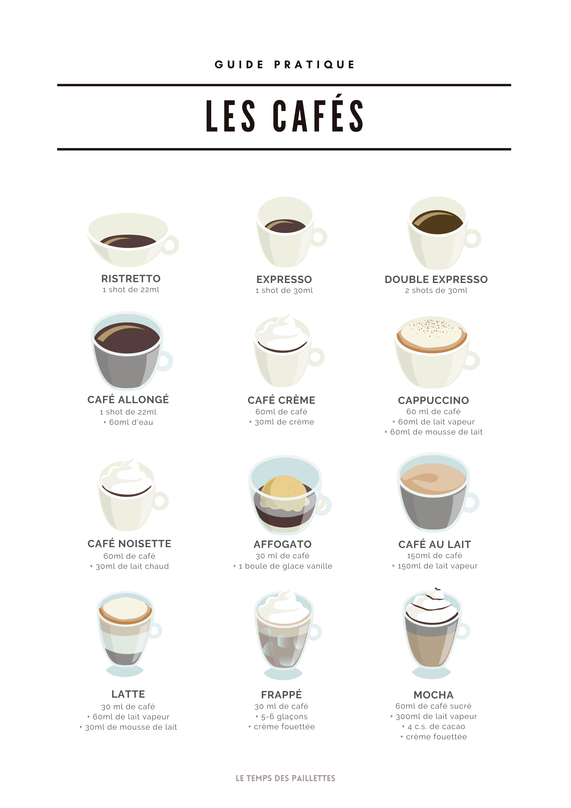

My Story
Okay, so there I am in Brodeaux, France, at my first café and for the life of my I have no idea what I'm looking at. The menu was overwhelming, and when I finally just took a blind leap and said "Affogato", out of sheer curiousity, I was met with confused looks and stares. Come to find out I had just ordered a dessert drink for breakfast.

Okay, so there I am in Brodeaux, France, at my first café and for the life of my I have no idea what I'm looking at. The menu was overwhelming, and when I finally just took a blind leap and said "Affogato", out of sheer curiousity, I was met with confused looks and stares. Come to find out I had just ordered a dessert drink for breakfast. So after spending a week there trying everything on the menu, getting a French to English dictionary, and some trial an error I figured, I'd share my knowledge with the world. So welcome to my "Guide Pratique" or my Practical Guide to coffee. Below is a list of every beverage I tried, it's ingredients and my personal taste rating.